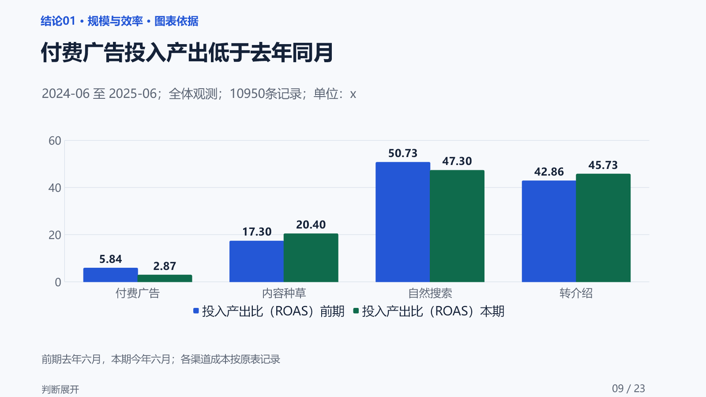

Excel 业务分析
报告与 PPT
把一张业务表，变成有依据、讲得清、能行动的经营简报。
面向运营、销售、产品及业务负责人。提供一张结构清晰的 Excel／CSV 和汇报目标，由 AI 检查口径、寻找重点、补查依据、组织结论和行动建议；先生成可离线阅读的 HTML，按需继续制作可编辑标准 PPT，并可选择使用 SlideViber 美化。
sheet-to-report · 已公开发布的分析与汇报 Skill · 自主合成经营数据案例
30 秒了解
- 适合谁
- 需要做周报、月报、活动复盘或阶段经营汇报的运营、销售、产品及业务负责人。
- 准备什么
- 一张结构清晰的 Excel／CSV、汇报对象，以及希望解决的问题。
- 能得到什么
- 可离线阅读的 HTML 分析简报；按需生成可编辑标准 PPT；还可选择单独安装 SlideViber 继续制作美化版。
- 怎样配合
- 你负责提供数据和业务目标、确认必要口径；AI 负责检查、分析、组织结论和生成报告。
先看实际效果
公开演示采用完全合成的 10 万行全渠道经营数据，覆盖 18 个月、11 个字段，不包含真实企业或个人信息。下面是标准 PPT 的实际页面，与本页 HTML 报告使用同一份分析。


标准版保留直接可编辑的图表与文字；可选的 SlideViber 美化版在不遗漏重要信息的前提下，重新组织构图和视觉层级。公开案例提供四组同页对照，以及两套完整的 23 页样例。
案例来源：本页保留正式 v0.2.6 的公开案例，截图、HTML 与标准 PPT 同源。平台介绍更新不改变这组样例的生成版本；合成案例用于展示分析和交付能力。
为什么选择 sheet-to-report
帮你看懂业务变化，串起汇报主线，也把下一步讲清楚。
- 找问题
- 抓住值得关注的问题。围绕你的汇报目标，从表中寻找重要变化、机会和风险。发现异常后，在数据支持的范围内继续按时间、渠道、人群或商品细分核查，并选择合适的图表说明。
- 核依据
- 结论有依据，判断有边界。先核对指标含义和比较范围，再组织结论。关键数字可以追溯到计算依据；数据不足时说明哪些还无法判断，避免把猜测当成事实。
- 串主线
- 把零散发现串成清楚的汇报主线。将整体表现、关键变化、细分证据和经营含义逐层展开，让读者顺着“发生了什么—哪些因素值得关注—依据是什么—下一步怎么做”理解整份报告。图表与文字前后呼应，汇报时更容易让听众跟上。
- 落行动
- 建议具体到行动和验证。说明针对哪个业务环节、建议怎么做、观察什么指标，以及什么情况下需要调整，帮助你把分析结果转成下一步工作安排。
- 出报告
- 一份分析，衔接阅读与汇报。按需生成离线 HTML、可编辑标准 PPT，并可另行安装 SlideViber 进一步美化。三类产物沿用同一套分析依据，并校验关键数字、口径与结论的一致性。
从 Excel 到报告
先完成分析与 HTML，再根据需要制作标准 PPT 和美化版；每一步都有可查看的产物。
| 阶段 | AI 会做什么 | 你怎样参与 | 可见结果 |
|---|---|---|---|
| 明确分析范围 | 检查文件、字段和时间范围；展示简短方案或开始分析 | 提供目标；需要时确认口径或调整方案 | 知道要分析什么、是否还需补充 |
| 生成 HTML 简报 | 寻找业务问题、补查证据、串联结论与行动，生成并检查 HTML | 阅读报告；只要 HTML 可在此结束 | 可打开的 HTML 及检查状态 |
| 制作标准 PPT （可选） | 在可预览环境展示主题小样，选定后生成完整稿 | 回复“生成 PPT”，再选主题 | 主题预览、整稿阅读入口、可编辑 PPTX |
| 继续美化 （可选） | 检查 SlideViber 依赖，在同源分析基础上优化版式 | 回复“制作美化版” | 单独保存的美化稿及预览，标准稿保留 |
实际确认次数取决于数据口径、开始方式、已有偏好和运行环境，不会为了走流程反复询问已经确认的内容。SlideViber 需单独安装，其图表编辑方式可能与标准版不同。
跟着示例做一次
下载完全合成的练习表和数据说明，在具备运行条件的 AI 工具中选择一种开始方式；跟做教程包含从数据到报告的完整步骤。
- 先确认方案
- 首次推荐。适合先确认分析方向和口径。可以这样发起：
请用 sheet-to-report 分析这份 Excel，面向业务负责人做月度复盘。先检查数据，用简短的方案告诉我：建议分析哪个时间范围、重点回答哪些业务问题、有哪些需要我确认的口径。等我确认后再生成 HTML 分析简报。完成后，请告诉我如何继续制作可编辑 PPT。
- 直接分析
- 适合目标和口径已经清楚时。可以这样发起：
请用 sheet-to-report 直接分析这份 Excel，面向业务负责人做月度复盘。先检查字段和时间范围；遇到影响结论的口径不清时再向我确认。先生成 HTML，完成后告诉我如何继续制作可编辑 PPT。
使用前准备：AI 工具需要能够读取文件并运行本地代码。HTML 需要 Python 3.10+ 和项目依赖；标准 PPT 还需要 Node.js 18+、python-pptx 及可用的预览工具。平台收录 Skill 不代表该平台已经具备完整运行条件。当前一次分析一张结构化表，个人和敏感信息请先删除或脱敏。
能力产品化与发布运营
- 能力产品化
- 将运营周报、月报和经营复盘方法转为可复用 Skill，覆盖单表 Excel／CSV 输入、口径确认、证据核查、HTML 分析简报和可编辑 PPT；把数字追溯、图表匹配与跨格式一致性纳入验收。
- 发布与运营
- 完成 GitHub、腾讯 SkillHub、魔搭渠道发布及平台适配；核查平台搜索展示、下载记录与安装路径，持续完善中文说明、FAQ、案例及跟做教程；平台累计 1500+下载、平台 AI 评测评级优秀(4.6/5)。
- 个人角色
- 主导业务需求、分析与汇报标准、用户使用流程和产品验收，协同 AI 完成开发与迭代。
- 业务应用
- 可迁移到运营周报、经营月报和活动复盘，减少数据分析与汇报表达之间的交接断点。
- 教育与伙伴应用
- 可组织成一次从数据到决策表达的实训任务，提供示例、操作步骤和交付要求，便于伙伴评估适用范围。
发布数据为已确认的阶段快照；完整说明、案例、教程及安装入口随公开项目维护。